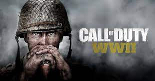
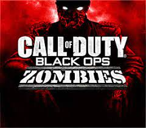

Call of duty world war
Ambientacion
La narrativa se desarrolla en varios teatros de operaciones clave de la Segunda Guerra Mundial, como el Desembarco de Normandía, la liberación de París y la Batalla del Bosque de Hürtgen
Multijugador
Incluye un modo multijugador competitivo que ofrece mapas y modos de juego inspirados en la Segunda Guerra Mundial. Los jugadores pueden elegir entre diferentes clases y participar en enfrentamientos en equipo.
Zombies
También cuenta con un modo Zombis cooperativo, en el que los jugadores se enfrentan a hordas de no muertos en una historia separada e independiente de la campaña principal.
Call of duty Black Ops
Ambientacion
presenta una narrativa que abarca la Guerra Fría y se extiende hasta la guerra de Vietnam. El juego incluye una serie de misiones secretas y operaciones encubiertas.

Multijugador
Incluye un modo multijugador competitivo con mapas y modos de juego variados.
Zombies
"Call of Duty: Black Ops" también fue pionero en el popular modo de juego Zombis, que permite a los jugadores cooperar para sobrevivir a oleadas de zombis en mapas específicos.